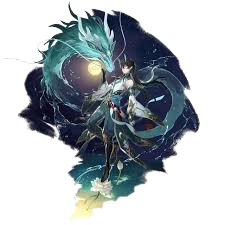

| Dan Heng - Imbibitor Lunae | |
|---|---|
| Alto Anciano de una Era Pasada | |
|  | |
| Rareza: | 5 estrellas |
| Tipo: | Imaginario |
| Facción: | Destrucción |
"No soy la sombra de nadie."
La verdadera forma de Vidyadhara de Dan Heng, revelada tras aceptar los poderes residuales de la reencarnación anterior de "Imbibitor Lunae". Al aceptar los majestuosos cuernos en la cima de su corona, debe aceptar todos los méritos y defectos atribuidos a esa persona.
Sin embargo, él nunca fue él mismo.
| Contenido |
|---|
Loto Benéfico: Utiliza un ataque de 2 golpes y causa DMG Imaginario igual al 50% del ATK de Dan Heng • Imbibitor Lunae a un único objetivo enemigo.
Transcendencia:
Utiliza un ataque de 3 golpes y causa daño imaginario igual al 130% del ATK de Dan Heng • Imbibitor Lunae a un único objetivo enemigo.
Lanza divina:
Utiliza un ataque de 5 golpes y causa DMG Imaginario igual al 190% del ATK de Dan Heng • Imbibitor Lunae a un único objetivo enemigo. A partir del cuarto golpe, causa simultáneamente DMG Imaginario igual al 30% del ATK de Dan Heng • Imbibitor Lunae a los objetivos adyacentes.
Salto relampago:
Utiliza un ataque de 7 golpes y causa DMG Imaginario igual al 250% del ATK de Dan Heng • Imbibitor Lunae a un único objetivo enemigo. A partir del cuarto golpe, causa simultáneamente DMG Imaginario igual al 90% del ATK de Dan Heng • Imbibitor Lunae a los objetivos adyacentes.
Dracore Libre: Mejora el ATQ básico. Las mejoras se pueden aplicar hasta 3 veces de forma consecutiva. Usar esta habilidad no consume Puntos de Habilidad y no se considera como usar una Habilidad.
• Mejorado una vez, Loto Benefactor se convierte en Trascendencia.
• Mejorado dos veces, Loto Benefactor se convierte en Lanza Divina.
• Mejorado 3 veces, Loto Benefactor se convierte en Salto Fulgurante.
Al usar Lanza Divina o Salto Fulgurante, a partir del cuarto golpe, se gana 1 carga de Outroar antes de cada golpe. Cada carga de ''Outroar'' aumenta el DMG CRIT de Imbibitor Lunae en un 6.0% hasta un máximo de 4 cargas. Estas cargas duran hasta el final de su turno.
Ablutes All de Azure Aqua: Utiliza un ataque de 3 golpes y causa daño imaginario del 180% del ATK de Imbibitor Lunae a un solo objetivo. Al mismo tiempo, causa daño imaginario igual al 84% del ATK de Imbibitor Lunae a enemigos adyacentes. Luego, obtiene 2 Squama Sacrosancta. Es posible tener hasta 3 Squama Sacrosancta, que se pueden usar para compensar el consumo de puntos de habilidad de Imbibitor Lunae. Consumir Squama Sacrosancta se considera equivalente a consumir puntos de habilidad.
Corazón Justo: Después de cada golpe durante un ataque, Dan Heng - Imbibitor Lunae obtiene Corazón Justo, lo que aumenta su Daño en un 5.0%. Este efecto puede acumularse hasta 6 veces, y dura hasta el final de su turno.